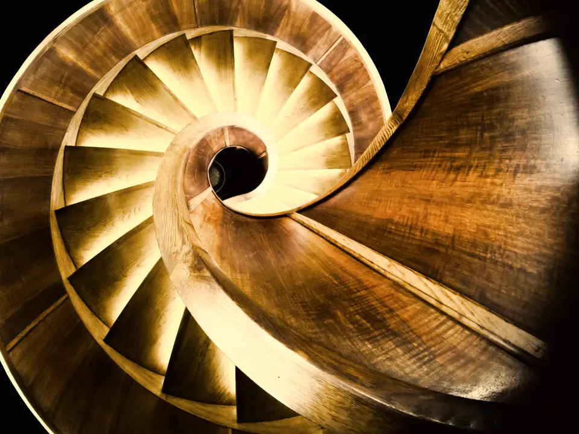
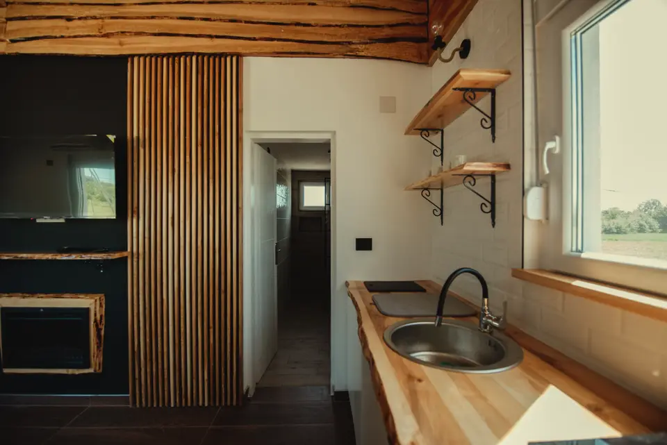
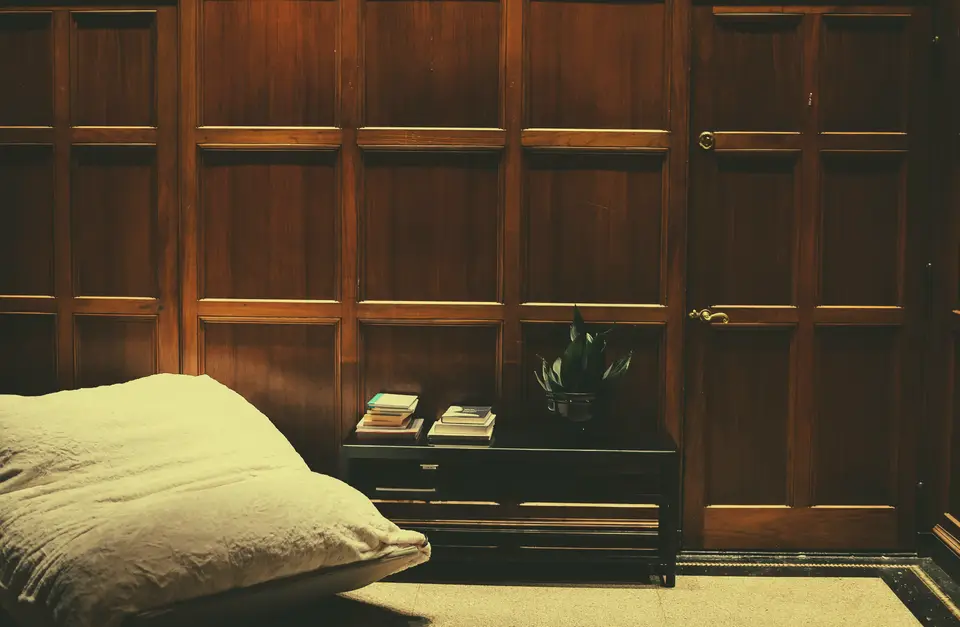

Menuisier à Rennes Escaliers et agencement
Escaliers, dressings et bibliothèques fabriqués à l’atelier, à Rennes, et posés chez vous.
Menuiserie sur mesure à Rennes
Je viens relever les cotes à Rennes, je fabrique à l’atelier de Rennes, puis je reviens poser, pour une maison comme pour un local professionnel.
Agencement sur mesure
Dressings, meubles de salle de bains, placards sous escalier et bibliothèques, dessinés pour votre logement à Rennes.
Escaliers et garde-corps
Escaliers intérieurs dessinés pour la trémie du logement, en chêne, frêne ou hêtre, avec un garde-corps assorti.
Parquets et habillages
Pose et rénovation de parquets massifs ou contrecollés, plinthes et habillages muraux en bois.
Réalisations en atelier et sur chantier
Quelques ouvrages sortis de l’atelier.


Photographies : Petar Milošević (CC BY-SA 4.0, adaptation sous la même licence), Shixart1985 (CC BY 2.0), Crew (CC0) — toutes modifiées pour ce site (étalonnées, parfois recadrées) et redimensionnées pour le web. Sources, licences et modifications
Communes limitrophes et voisines
L’atelier se déplace aussi dans les communes voisines.
Prendre contact pour un projet à Rennes
Après la visite, je vous remets un devis détaillé, gratuit.
Demande reçue.
Démonstration : aucune donnée n’a été envoyée.
Je vous rappelle sous deux jours ouvrés pour fixer une visite.
- Projet
- À préciser à la visite
- Commune
- Rennes
- Quand
- Dans les trois mois
La suite
- Visite technique
Je relève les cotes chez vous et je vérifie les aplombs, l’humidité des murs et les accès.
- Plan et devis
Vous recevez le plan coté, le choix des essences et des ferrures, et un devis ligne par ligne.
- Fabrication et pose
Je fabrique les pièces à l’atelier, puis je les pose chez vous à la date fixée ensemble.
Ou par téléphone : 02 61 91 38 47